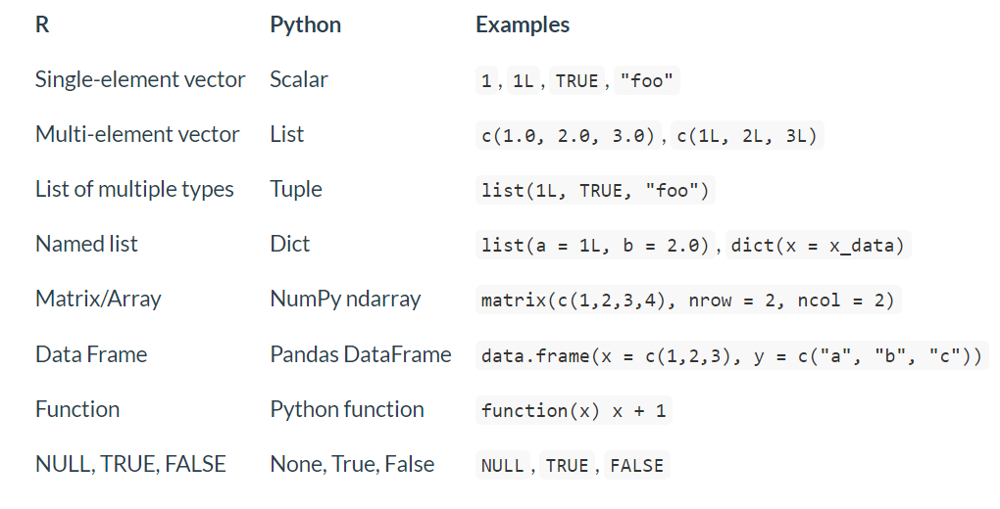

Reticulate Demo
Contents
Reticulate Demo#
Introduction#
reticulate lets R and Python communicate with each other’s
environments.
# if not installed:
# install.packages('reticulate')
library(reticulate)
library(tidyverse)
# create R object
hello <- "Hello World! -R"
print(hello)
## [1] "Hello World! -R"
# create Python object
hello = "Hello World! -Python"
print(hello)
## Hello World! -Python
Setting up reticulate#
In order for Python to talk to R, it needs to find the R environment and “translate” the objects there. R also needs to know where to find Python from its global environment.
We start by telling R which version of Python to use and setting up a Python environment.
We will do this with a conda environment, but we can also point it to
our PATH (path to the folder where you have Python installed) or set
up a different type virtual environment. For more information on how
reticulate prioritizes identifying the Python version/environment,
check the documentation
here.
# create conda environment for demo (run if does not already exist on your machine)
conda_create(envname = "reticulate_demo", packages = c("scikit-learn", "pandas", "matplotlib", "numpy", "seaborn"))
# tell reticulate to use this environment
use_condaenv("reticulate_demo")
Note: you can create an environment using your normal workflow (i.e. command line) as well.
R also needs access to any Python modules you are calling. You can
import any Python module, but it must be installed first. We will use
our conda environment again, but you can read about other options for
installing Python modules via reticulate
here.
# install with conda
conda_install(
packages = c("scikit-learn", "pandas", "matplotlib", "numpy", "seaborn"),
envname = "reticulate_demo"
)
Note: you can install packages into your environment using your normal workflow (i.e. command line) as well.
Options for Working with Python in R#
The reticulate engine provides 4 options for working with Python in R.
Option 1: R Markdown#
reticulate allows Python and R to interact via R Markdown chunks.
# create R object
hello <- "Hello World! -R"
print(hello)
## [1] "Hello World! -R"
To use Python in RMarkdown, just create a Python chunk, rather than an R chunk. You can add a shortcut to create Python chunks in RStudio. (Tools > Modify Keyboard Shortcuts)
# create Python object
hello = "Hello World! -Python"
print(hello)
## Hello World! -Python
Note: you can print any Python output via R Markdown (i.e. graphical
output from matplotlib), not just text.
Variables/state are shared between Python chunks, but not R chunks. That
means that the variables you generate with these python code chunks
are not stored in your R environment, they are in the Python
environment. If you check to see if a variable created with a python
code chunk exists in R, it will return that it doesn’t.
test_object = "Python" + "Rocks"
print(test_object)
## PythonRocks
exists("test_object")
## [1] FALSE
Access Python objects using R with the py object (exported by
reticulate) and the $ operator.
print(py$hello)
## [1] "Hello World! -Python"
print(py$test_object)
## [1] "PythonRocks"
Access objects created with R chunks using Python chunks with the r
object.
print(r.hello)
## Hello World! -R
Chunk options work for Python chunks in the same way they do for R.
# will not evaluate in knitted document
print(r.hello)
Option 2: Python in the IDE#
Option 2a: Sourcing Python Scripts#
source_python('reticulate_demo.py')
# using function from .py script
add(5, 10)
## [1] 15
Newer versions of RStudio can show Python objects in the Environment pane.
Option 2b: Running Python via RStudio#
ctrl+enter or cmd+enter executes Python code in RStudio. This option can
still access R and Python objects that were created in your environment
previously. Run exit or quit to leave the Python interpreter.
Option 3: Python REPL#
Python REPL (read, evaluate, print, loop) initiates a console where you
can view output interactively. This option can still access R and Python
objects that were created in your environment previously
(i.e. print(r.hello). Run exit or quit to leave the console.
repl_python()
Option 4: Python in R Code#
All of the r chunks in this notebook can be run as standalone R code,
and will access the Python environment in the same way.
Working with Data Types#
When calling into Python, R data types are automatically converted to their equivalent Python types. When values are returned from Python to R they are converted back to R types.

Data types that are not on the list cannot be converted to the other environment.
# import python modules (note: must be previously installed)
np <- import('numpy')
By default, reticulate translates results of Python operations into R
objects.
# create numpy array
# by default, reticulate translates results into R objects
np_array <- np$array(c(1:4))
np_array
## [1] 1 2 3 4
class(np_array)
## [1] "array"
What if we tell reticulate not to translate the results?
np2 <- import('numpy', convert = FALSE)
# create numpy array
np_array_notconverted <- np2$array(c(1:4))
np_array_notconverted
## [1 2 3 4]
class(np_array_notconverted)
## [1] "numpy.ndarray" "python.builtin.object"
You can convert a python object to R explicitly with py_to_r().
np_array_converted <- py_to_r(np_array_notconverted)
class(np_array_converted)
## [1] "array"
Another way to run Python code is with the py_run_string function.
py_run_string("import pandas as pd")
py_run_string("data = [10,20,30]")
py_run_string("pd_df = pd.DataFrame(data, columns = ['Numbers'])")
py$pd_df
## Numbers
## 1 10
## 2 20
## 3 30
# R has converted this automatically
class(py$pd_df)
## [1] "data.frame"
Type conversion can cause problems if the Python API expects a given datatype and the R input does not behave as expected.
For example:
If a Python API requires a list and you pass a single element R vector it will be converted to a Python scalar. To overcome this simply use the R
list()function explicitly.You may need to use the
tuple()anddict()functions when a Python API requires a tuple or dictionary that are more complex than the standard inputR and Python have different default numeric types. If you write 42 in R it is considered a floating point number whereas 42 in Python is considered an integer. When a Python API expects an integer, use the L suffix within R.
Python uses 0-based indices rather than 1-based indices (R). You must use a 0-based index with an L (to indicate value is an integer) to access the first value of a collection in Python.